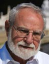

International Advisory Board and Symposium Speaker
Leopold Flohé
Education:1957–1959: Universities of Cologne and Heidelberg (Philosophy), 1959–1968: University of Tübingen (Medicine), Staatsexamen 1968; Medical Doctor 1968; 1962–1967: University of Tübingen (Biochemistry), Diplom 1967; 1971:University of Tübingen, Venia legendi in Biochemistry. 1974: Bartholomews' Hospital, London: Training in Clinical Pharmacology.
Appointments:1968–1971:University of Tübingen, Dept. Physiological Chemistry, Scientist (Assistent); 1971–1973: ibidem, Senior Scientist (Oberassistent); 1974–1979: University of Tübingen, Professor of Biochemistry (apl. Prof.); 1974–1976: Grünenthal GmbH, Stolberg / Aachen, Head of Section Pharmacotherapeutics; 1976–1990: ibidem, Director Research and Development; 1979-1990: University of Aachen (RWTH), Professor of Biochemistry (apl.Prof.); 1990–1995: Technical University of Braunschweig: Professor of Biotechnology and Biochemistry; 1990–1995: Gesellschaft für Biotechnologische Forschung (GBF/HZI), Scientific Director; 1996: University of California at Berkeley, Visiting Professor; 1996-2003: Technical University of Braunschweig: Professor of Biochemistry; 2002–2010: MOLISA GmbH, CEO; 2008–present: Otto-von-Guericke-Universität, Magdeburg (Guest Professor) and Chairman of COST Action CM0801.
Professional Organisations: GBM, FEBS, SFRR, AAAS, ASBMB.
Honours and Awards: 1962-1968: Fellow of Studienstiftung des Deutschen Volkes; 1973: Award of the Anna-Monika-Foundation (for basic research in endogenous depression); 1985: Claudius-Galenus-Preis (for production of urokinase by recombinant technology); 1997: Honorary Degree (Dr. h. c.), University of Buenos Aires, Argentina (for achievements in parasitology); 1997: Klaus Schwarz Commemorative Medal (for pioneering in selenium research); 1998:"Paper of the year" award (to P.H. student E. Nogoceke for discovery of the trypanosomatid peroxidase system); Science and Humanity Price, Oxygen Club of California (for life time achievements); 2006:Trevor Frank Slater Award and Gold Medal, SFRR International (for life time achievements); Redox Pioneer #3, Antioxid Redox Signal 2010.
Extramural Activities: Editorial Board, Biological Chemistry; Co-Founder, Axxima Pharmaceutical AG, Martinsried; Founder, MOLISA GmbH, Magdeburg.
Major Scientific Achievements: First verification of a selenoprotein (glutathione peroxidase) in animals (1973); first detection of superoxide radical production by the respiratory chain of mitochondria (1974); development of Tramadol, now best selling analgesic (1978); sequencing, cloning, development, and production of urokinase/pro-urokinase (1982-89); elucidation of the structure, gene, catalytic mechanism and role in spermatogenesis of the selenoprotein phospholipid hydroperoxide glutathione peroxidase (1992-2003); elucidation of trypanothione-mediated hydroperoxide reduction in parasitic trypanosomatids (1997-2006); hydroperoxide metabolism in mycobacteria (2003).
Five Selected Publications (out of >200)
Brigelius-Flohé, R., and Flohé, L., Basic Principles and Emerging Concepts in the Redox Control of Transcription Factors (Comprehensive invited review). Antioxid Redox Signal 2011 (doi: 10.1089/ars.2010.3534).
Flohé, L., Changing Paradigms in Thiology: From Antioxidant Defense Toward Redox Regulation (Invited review). Meth. Enzymol. 2010, 473, 1-39
Flohé, L., In Search of Trypanocidal Drugs. In: Antiparasitic and Antibacterial Drug Discovery (P. M. Selzer, ed.). Wiley-VCH Verlag GmbH & Co. KGaA, Weinheim 2009, pp. 211-226.
Flohé, L. and Harris, J. R. (eds), Peroxiredoxin Systems. Subcellular Biochemistry, Vol.44. Springer, New
York 2007, pp.1-389, in particular pp. 1-25, 83-114 and 207-218.
Comini, M., Menge, U., Wissing, J. and Flohé, L., Trypanothione Synthesis in Crithidia Revisited. J Biol Chem 2005. 280: 6850-6860.
Ursini, F.; Heim, S.; Kiess, M.; Maiorino, M.; Roveri, A.; Wissing, J.; Flohé, L., Dual function of the selenoprotein PHGPx during sperm maturation. Science 1999, 285, (5432), 1393-1396.
« Go Back